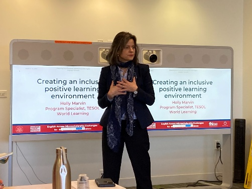
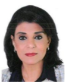
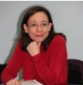
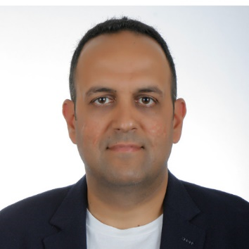
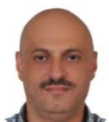

Scientific Editorial Board
Distinguished international professors, researchers, legal scholars, and multidisciplinary experts overseeing the GIMS Journal peer-review process.

Chief Editor: Dr. Ghada M. Awada
✉️ Email Address: gims-journal@gloria-leb.org
- Holds a Ph.D. in Applied Linguistics and Education and a Ph.D. in Public International Law and Diplomacy
- Is a strong advocate of innovation and tolerance in Education
- Founder of Gloria Academy: www.gloria-leb.org
- A Fulbright Scholar, a recipient of three British Council awards, and a holder of several honors and awards in Education, International Law, and Diplomacy
- Has held key academic and administrative roles at top universities in Lebanon and abroad, including serving as Head of Department at Lebanese University and Beirut Arab University (BAU)
- Served as Head of the English Department at the Center for Educational Research and Development (CRDP) at the Ministry of Education and Higher Education in Lebanon
- Has published extensively in indexed journals and authored several book chapters with renowned publishers
- Is a frequent speaker at major international conferences
- Serves on the editorial boards of several reputable journals
- Expert in curriculum design, digital resources, ICT training, and language learning networks

Dr. Kara McBride
✉️ Email Address: Kara.mcbride@worldlearning.org
- Senior Technical Education Specialist at World Learning in Washington, DC, leading projects in the Middle East, North Africa, and Latin America.
- Lead designer of online teacher training courses taken by over 35,000 educators worldwide.
- Former Associate Professor at Saint Louis University, specializing in computer-assisted language learning (CALL).
- Author of numerous publications on language teaching, teacher professional development, and educational technology.

Dr. Mayssah El Nayal
✉️ Email Address: mayssah.mayssah@gmail.com
- Professor of Clinical Psychology.
- Chairperson of the General Education and Student Wellbeing Department at Gulf Medical University, Ajman, UAE.
- Former Dean of the Faculty of Human Sciences at Beirut Arab University (BAU), Lebanon.
- Former Head of the Department of Mental Health at the University of Qatar.
- Extensive research and publication record in clinical psychology, mental health, and educational psychology.

Dr. Laila C. Ahmad Fouad Helmi
✉️ Email Address: laila.helmi@gmail.com
- Associate Professor of English Language and Literature.
- Former Head of the Department of English Language and Literature at Beirut Arab University (BAU).
- Specialist in Critical Discourse Analysis, Stylistics, and Applied Linguistics.
- Author of numerous research papers published in peer-reviewed international journals.
- Recent interests focus on digital humanities and corpus linguistics.

Dr. Raymond Bou Nader
✉️ Email Address: raymond.bounader@usj.edu.lb
- Holds a Ph.D. in Statistics from Saint Joseph University of Beirut and a Ph.D. in Management with a specialization in modeling from the University of Toulon in France.
- Associate professor at Saint Joseph University of Beirut, where he teaches courses in statistics and quantitative data analysis.
- Advisor to the president of the Center for Educational Research and Development (CERD) at the Ministry of Education and Higher Education in Lebanon since 2019, specializing in educational research and statistics.
- Senior consultant in educational statistics and an expert in Education Management Information Systems (EMIS) for international organizations such as the World Bank, UNESCO, and UNICEF.
- Member of the French Statistical Society since 2019.
- Held guest lecturer positions at several European universities.
- Affiliated with the University of Lorraine in France and teaches at institutions such as EDC Business School in Paris, Global Business School in Barcelona, and Saint Joseph University of Abidjan in Côte d’Ivoire.
- Conducted numerous national and international research projects in education, labor markets, and mental health, as well as monitoring and evaluation initiatives for various national and international organizations.

Dr. Fouad Yehya
✉️ Email Address: yehya_fouad@yahoo.com
- Holds a Ph.D. in education.
- Professor, researcher, and consultant with expertise in education and curriculum design.
- Instructor at Saint Joseph University of Beirut (USJ) in Lebanon, and Westford University (Sharjah- UAE) mentoring master's and PhD students.
- Consultant and trainer with Lebanon's Center for Educational Research and Development (CERD).
- Contributions to international projects include designing digital learning resources for Alef Education and helping to implement the International Arabic Baccalaureate (IAB) program in Saudi Arabia.
- Research interests center on integrating technology into education, fostering reflective practices, and advancing leadership models.
- Author of numerous peer-reviewed articles and spokesperson at international conferences.
- Educator who promotes impactful research and transformative teaching practices.
Dr. Oussama Ghneim
✉️ Email Address: oghneim@yahoo.com
- Holds a Ph.D. in Education, Lebanese University - Faculty of Pedagogy.
- Founder and former president of the Welfare Association for Research and Development (WARD).
- Lecturer at the Lebanese University and various private Lebanese universities.
- Conducted numerous studies and research in Sustainable Development, Entrepreneurship Education, Work-Based Learning, Labor Market Information
- Currently a consultant at the Office of the Director-General of Vocational and Technical Education.
- Held several positions in the public and private sectors, including head of the TVET department, general coordinator for technology education, and head of the Educational TV and Radio unit at the Center for Educational Research and Development (CRDP) - Ministry of Education and Higher Education, Lebanon.
Dr. Abir K. Abdallah
✉️ Email Address: abirabdallah@gmail.com
- Holds a Ph.D. in Teaching English as a Foreign Language with the highest distinction from Universitat Rovira I Virgili, Spain in 2015
- Has a teaching diploma in secondary education from the Lebanese University, Faculty of Pedagogy
- Has more than 15 years of experience as a teacher and coordinator of English in public intermediate and secondary schools
- Has participated in designing the English curriculum at a private institution
- Dr. Abdallah currently works as an associate professor in the English department at the Faculty of Pedagogy in the Lebanese University. She has taught courses related to teaching English language skills and subskills, English language assessment and evaluation, blended learning, teaching English using technological tools and devices, Business English, and English for specific purpose.
- Her current research interests include blended learning, online assessment, and teaching and assessing 21st century skills.

Dr. Amal Tawbe
✉️ Email Address: amal.tawbeh@ul.edu.lb
- Holds a Ph.D. in English Language and Literature from Lebanese University
- Primary Fields: Contemporary American Literature and Postcolonial Literatures of the Middle East.
- Secondary Fields: Literary Theory, Gender, and Migration Studies.
- Holds an M.A. in Comparative Literature from Lebanese American University (LAU).
- Currently a professor at the Lebanese University

Dr. Ali Kazwini-Housseini
✉️ Email Address: alibanais@yahoo.fr
- Holds a Ph.D. in Language Science-Linguistics from UR-N, France.
- Associated Researcher at the French laboratory DyLiS and a full professor in Lebanon.
- Linguist and jurist.
- Graduate in Russian Language, Literature, and Civilization (Master's degree from the Sorbonne-Paris IV).
- Holds a degree in public administration law (University of Rouen-Normandy).
- Has extensive pedagogical and administrative experience in France, including roles at the University of Rouen-Normandy.
- HCERES correspondent for evaluation coordination at UR-N.
- Head of the Middle East office in the International Relations Department.
- Administrative Director of the Institute of Preparation for General Administration.
- Cabinet Director of the presidency of the university.
- Experience in teaching at the French Embassy in Belarus and participating in doctoral seminars in the USA.
- Vice-Dean in charge of Master's and Doctorate studies at the Faculty of LSH, IUL, and former dean of the same faculty.
- Fluent in Arabic, French, English, and Russian, with basic knowledge of Belarusian and Kurmanji.
- Finalist for the Flaubert Foundation Prize for Doctoral Research.
- Author of numerous scholarly articles in international journals.